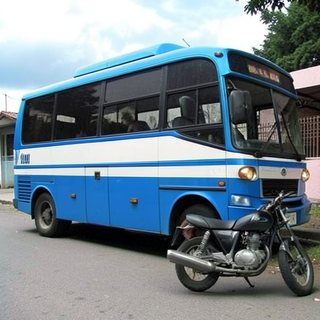
ICLR 2027 · Submission 8400 · anonymous
Figures for the author response
This anonymous page loads nothing from other sites.
Reviewer mBiS (3/3)
DMD2 under matched prompts and compute
DMD2 (official code, App. H.2 recipe) trained on our prompt pool and on COCO captions only. It peaks at 0.774 after 7 H100 GPU-h and then declines; RDM stays between 0.79 and 0.82 over all 180 steps. RDM's compute excludes its one-time reference (about 96 H100 GPU-h).
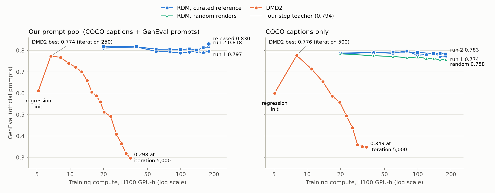
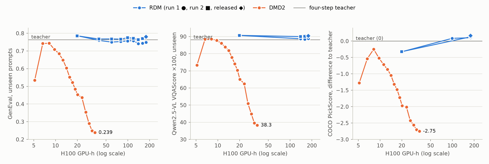
Table: every plotted value
| model | iteration (gen. updates) / step | H100 GPU-h | GenEval | GenEval unseen | VQAScore unseen | COCO PickScore Δ |
|---|---|---|---|---|---|---|
| DMD2, our pool | init | 5.2 | 0.612 | 0.535 | 73.3 | -1.28 |
| DMD2, our pool | 250 (50) | 6.7 | 0.774 | 0.742 | 88.4 | -0.54 |
| DMD2, our pool | 500 (100) | 8.2 | 0.768 | 0.744 | 88.5 | -0.25 |
| DMD2, our pool | 750 (150) | 9.7 | 0.740 | 0.709 | 87.8 | -0.52 |
| DMD2, our pool | 1,000 (200) | 11.2 | 0.722 | 0.685 | 86.1 | -0.71 |
| DMD2, our pool | 1,250 (250) | 12.7 | 0.700 | 0.649 | 83.9 | -0.86 |
| DMD2, our pool | 1,500 (300) | 14.2 | 0.660 | 0.603 | 81.8 | -1.05 |
| DMD2, our pool | 1,750 (350) | 15.7 | 0.606 | 0.552 | 77.9 | -1.31 |
| DMD2, our pool | 2,000 (400) | 17.2 | 0.588 | 0.522 | 74.1 | -1.48 |
| DMD2, our pool | 2,250 (450) | 18.7 | 0.559 | 0.484 | 70.3 | -1.72 |
| DMD2, our pool | 2,500 (500) | 20.2 | 0.512 | 0.453 | 65.1 | -1.97 |
| DMD2, our pool | 3,000 (600) | 23.2 | 0.492 | 0.436 | 62.5 | -2.01 |
| DMD2, our pool | 3,500 (700) | 26.1 | 0.408 | 0.354 | 50.9 | -2.42 |
| DMD2, our pool | 4,000 (800) | 29.1 | 0.365 | 0.290 | 44.9 | -2.56 |
| DMD2, our pool | 4,500 (900) | 32.0 | 0.319 | 0.249 | 39.6 | -2.70 |
| DMD2, our pool | 5,000 (1000) | 35.0 | 0.298 | 0.239 | 38.3 | -2.75 |
| DMD2, COCO only | init | 5.1 | 0.601 | 0.525 | 72.4 | -1.21 |
| DMD2, COCO only | 500 (100) | 8.0 | 0.776 | 0.737 | 87.7 | -0.27 |
| DMD2, COCO only | 1,000 (200) | 11.0 | 0.713 | 0.674 | 85.2 | -0.72 |
| DMD2, COCO only | 1,500 (300) | 13.9 | 0.653 | 0.593 | 80.8 | -1.20 |
| DMD2, COCO only | 2,000 (400) | 16.8 | 0.587 | 0.525 | 73.8 | -1.67 |
| DMD2, COCO only | 2,500 (500) | 19.7 | 0.558 | 0.487 | 68.8 | -1.81 |
| DMD2, COCO only | 3,000 (600) | 22.7 | 0.494 | 0.430 | 61.6 | -2.18 |
| DMD2, COCO only | 3,500 (700) | 25.6 | 0.439 | 0.371 | 54.7 | -2.30 |
| DMD2, COCO only | 4,000 (800) | 28.5 | 0.359 | 0.292 | 45.1 | -2.68 |
| DMD2, COCO only | 4,500 (900) | 31.5 | 0.351 | 0.277 | 44.8 | -2.60 |
| DMD2, COCO only | 5,000 (1000) | 34.4 | 0.349 | 0.273 | 43.2 | -2.64 |
| RDM, our pool, run 1 | step 20 | 20 + ref. | 0.811 | 0.786 | 90.6 | -0.33 |
| RDM, our pool, run 1 | step 40 | 40 + ref. | 0.816 | 0.760 | – | – |
| RDM, our pool, run 1 | step 60 | 60 + ref. | 0.796 | 0.750 | – | – |
| RDM, our pool, run 1 | step 80 | 80 + ref. | 0.793 | 0.753 | – | – |
| RDM, our pool, run 1 | step 100 | 100 + ref. | 0.788 | 0.757 | – | +0.08 |
| RDM, our pool, run 1 | step 120 | 119 + ref. | 0.793 | 0.758 | – | – |
| RDM, our pool, run 1 | step 140 | 139 + ref. | 0.795 | 0.742 | 88.7 | – |
| RDM, our pool, run 1 | step 160 | 159 + ref. | 0.789 | 0.743 | 88.5 | – |
| RDM, our pool, run 1 | step 180 | 179 + ref. | 0.797 | 0.749 | 88.8 | +0.10 |
| RDM, our pool, run 2 | step 20 | 20 + ref. | 0.819 | 0.786 | 90.7 | -0.32 |
| RDM, our pool, run 2 | step 40 | 40 + ref. | 0.817 | 0.767 | – | – |
| RDM, our pool, run 2 | step 60 | 60 + ref. | 0.806 | 0.768 | – | – |
| RDM, our pool, run 2 | step 80 | 80 + ref. | 0.806 | 0.767 | – | – |
| RDM, our pool, run 2 | step 100 | 100 + ref. | 0.805 | 0.775 | – | – |
| RDM, our pool, run 2 | step 120 | 119 + ref. | 0.807 | 0.772 | – | – |
| RDM, our pool, run 2 | step 140 | 139 + ref. | 0.802 | 0.764 | 90.0 | – |
| RDM, our pool, run 2 | step 160 | 159 + ref. | 0.812 | 0.770 | 90.2 | – |
| RDM, our pool, run 2 | step 180 | 179 + ref. | 0.818 | 0.780 | 90.5 | +0.13 |
| RDM, COCO top-3, run 1 | step 20 | 20 + ref. | 0.785 | 0.754 | 89.8 | -0.34 |
| RDM, COCO top-3, run 1 | step 40 | 40 + ref. | 0.791 | 0.751 | – | – |
| RDM, COCO top-3, run 1 | step 60 | 60 + ref. | 0.787 | 0.745 | – | – |
| RDM, COCO top-3, run 1 | step 80 | 80 + ref. | 0.798 | 0.762 | – | – |
| RDM, COCO top-3, run 1 | step 100 | 100 + ref. | 0.777 | 0.739 | – | -0.03 |
| RDM, COCO top-3, run 1 | step 120 | 119 + ref. | 0.781 | 0.738 | – | – |
| RDM, COCO top-3, run 1 | step 140 | 139 + ref. | 0.788 | 0.737 | 88.7 | – |
| RDM, COCO top-3, run 1 | step 160 | 159 + ref. | 0.773 | 0.737 | 88.4 | – |
| RDM, COCO top-3, run 1 | step 180 | 179 + ref. | 0.774 | 0.736 | 88.5 | -0.05 |
| RDM, COCO top-3, run 2 | step 20 | 20 + ref. | 0.787 | 0.757 | – | – |
| RDM, COCO top-3, run 2 | step 60 | 60 + ref. | 0.793 | 0.747 | – | – |
| RDM, COCO top-3, run 2 | step 100 | 100 + ref. | 0.791 | 0.743 | – | – |
| RDM, COCO top-3, run 2 | step 140 | 139 + ref. | 0.785 | 0.738 | 89.1 | – |
| RDM, COCO top-3, run 2 | step 160 | 159 + ref. | 0.786 | 0.740 | 89.0 | – |
| RDM, COCO top-3, run 2 | step 180 | 179 + ref. | 0.783 | 0.738 | 89.0 | -0.07 |
| RDM, COCO random renders | step 20 | 20 + ref. | 0.785 | 0.753 | 89.5 | -0.55 |
| RDM, COCO random renders | step 40 | 40 + ref. | 0.775 | 0.742 | – | – |
| RDM, COCO random renders | step 60 | 60 + ref. | 0.772 | 0.717 | – | – |
| RDM, COCO random renders | step 80 | 80 + ref. | 0.766 | 0.725 | – | – |
| RDM, COCO random renders | step 100 | 100 + ref. | 0.770 | 0.723 | – | -0.49 |
| RDM, COCO random renders | step 120 | 119 + ref. | 0.763 | 0.713 | – | – |
| RDM, COCO random renders | step 140 | 139 + ref. | 0.762 | 0.712 | 87.3 | – |
| RDM, COCO random renders | step 160 | 159 + ref. | 0.756 | 0.719 | 87.7 | – |
| RDM, COCO random renders | step 180 | 179 + ref. | 0.758 | 0.714 | 87.7 | -0.53 |
| RDM released | step 180 | 179 + ref. | 0.830 | 0.780 | 90.4 | +0.17 |
| Four-step teacher | 0.794 | 0.764 | 88.1 | 0 |
Reviewer mBiS (3/3)
Samples along the DMD2 run
Six random COCO-val prompts; each column shares the prompt and the initial noise. Past its peak, DMD2 drifts toward crowded scenes that ignore the prompt.
A blue and white bus parked in front of a motorcycle.
A motorcycle parked at a store parking lot.
A sign and clock on the side of a street.
A white street sign hanging from the side of a pole.
Small children with protective gear playing in a park.
A single engine plane in the air right above a grassy field.
Four-step teacher
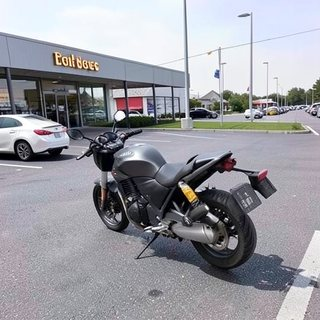
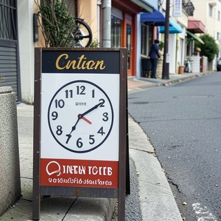
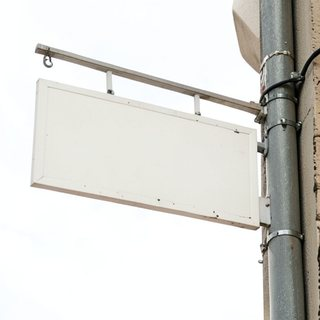
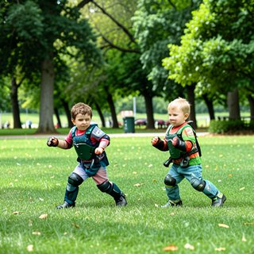
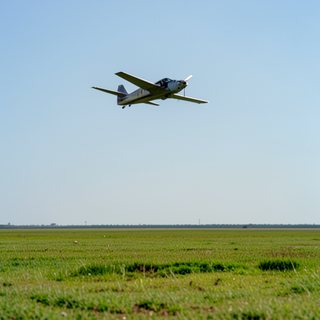
RDM, released (step 180)
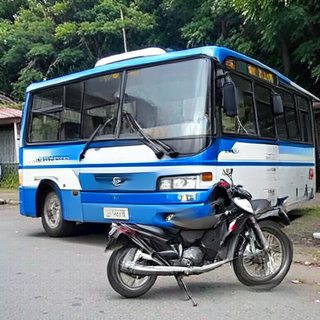
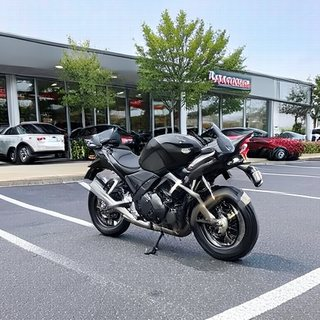
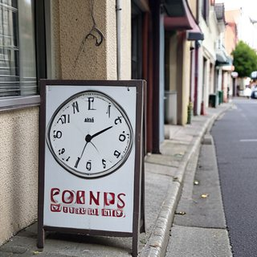
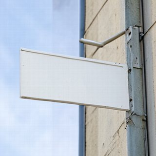
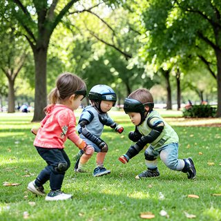
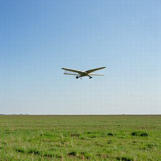
DMD2, iteration 250 (best)
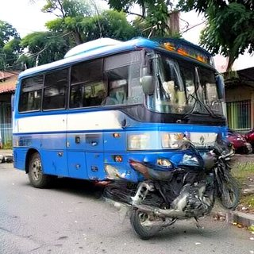
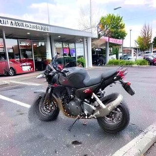
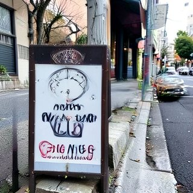
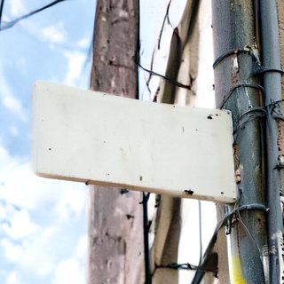
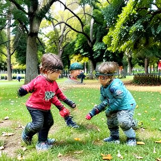
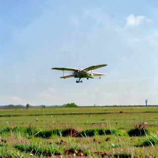
DMD2, iteration 1,000
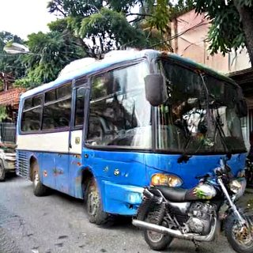
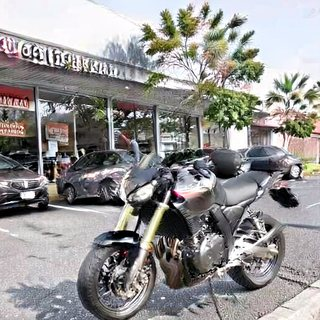
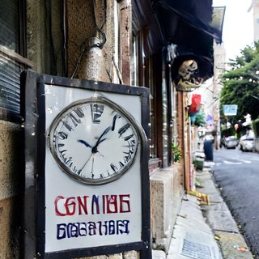
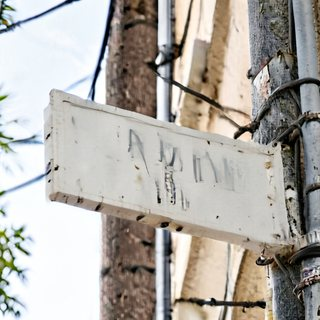
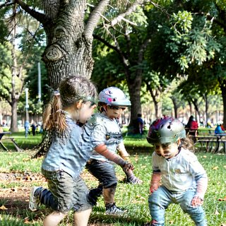
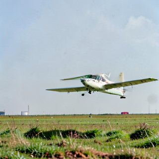
DMD2, iteration 2,500
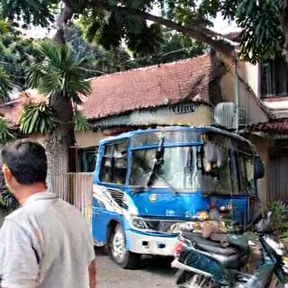
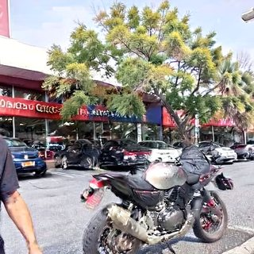
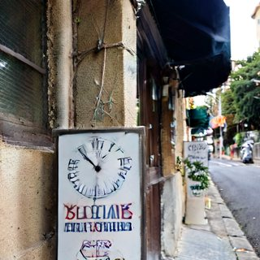
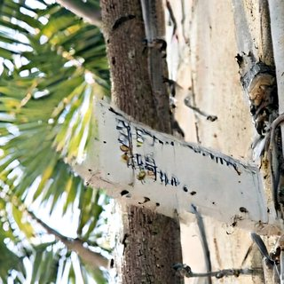
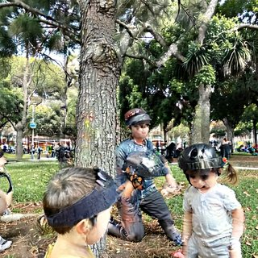
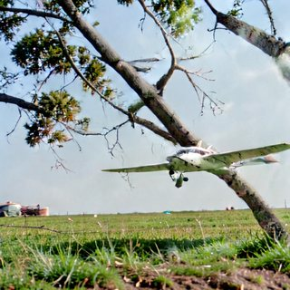
DMD2, iteration 5,000
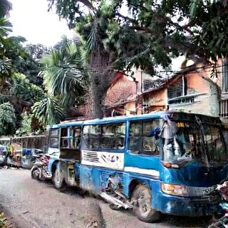
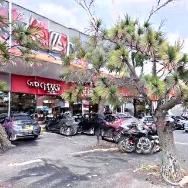
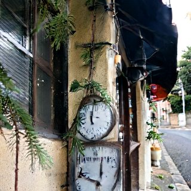
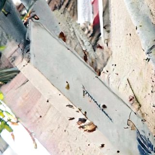
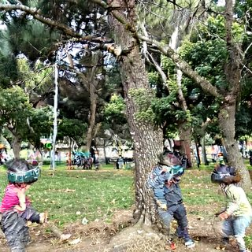
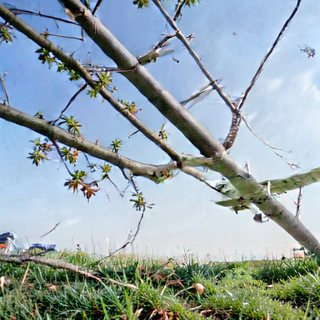
Reviewers mBiS (2/3) and mtSD
Unseen compositional prompts
Five of the 960 unseen prompts; each column shares the noise. Under each image: the GenEval detector's verdict.
a photo of a green dining table and a red baseball bat
color_attr
color_attr
a photo of a pink computer keyboard
colors
colors
a photo of four potted plants
counting
counting
a photo of a stop sign and a skis
two_object
two_object
a photo of a motorcycle and an orange
two_object
two_object
Four-step teacher
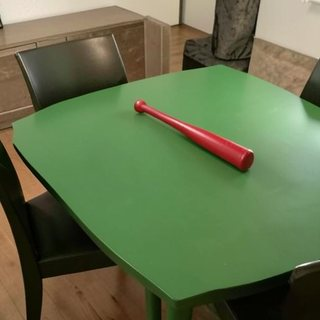
✓ detector: correct
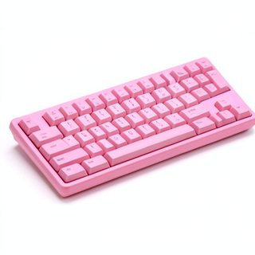
✓ detector: correct
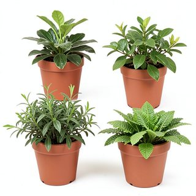
✓ detector: correct
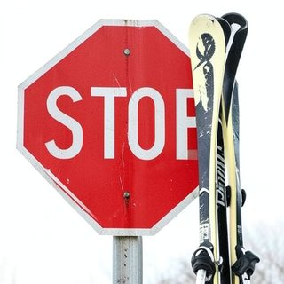
✓ detector: correct
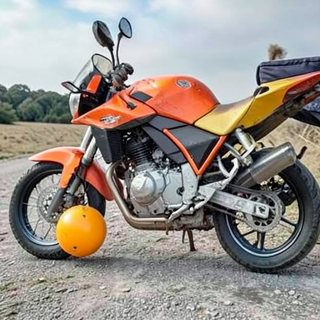
✗ detector: incorrect
RDM, released (step 180)
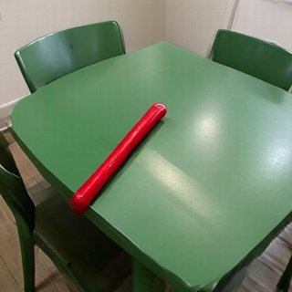
✓ detector: correct
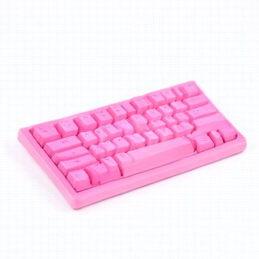
✓ detector: correct
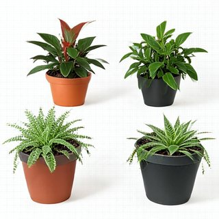
✓ detector: correct
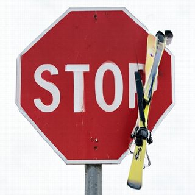
✗ detector: incorrect
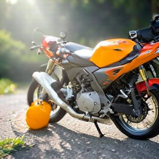
✓ detector: correct
DMD2, iteration 250 (best)
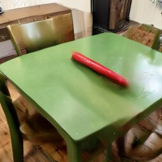
✗ detector: incorrect
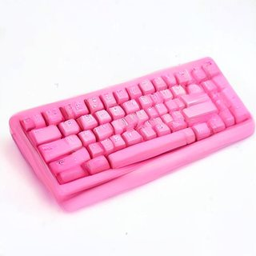
✓ detector: correct
✗ detector: incorrect
✓ detector: correct
✗ detector: incorrect
DMD2, iteration 1,000
✗ detector: incorrect
✓ detector: correct
✓ detector: correct
✗ detector: incorrect
✗ detector: incorrect
Reviewer mBiS (2/3)
Checkpoint selection: training MMD and GenEval
In both re-runs the training MMD is lowest at step 180, while GenEval is highest at step 20 or 40: selecting by GenEval would have picked an early checkpoint.
Table: every plotted value
| step | training MMD, run 1 | run 2 | GenEval, run 1 | run 2 | unseen, run 1 | run 2 |
|---|---|---|---|---|---|---|
| 20 | 0.238 | 0.238 | 0.811 | 0.819 | 0.786 | 0.786 |
| 40 | 0.148 | 0.147 | 0.816 | 0.817 | 0.760 | 0.767 |
| 60 | 0.134 | 0.133 | 0.796 | 0.806 | 0.750 | 0.768 |
| 80 | 0.130 | 0.129 | 0.793 | 0.806 | 0.753 | 0.767 |
| 100 | 0.128 | 0.127 | 0.788 | 0.805 | 0.757 | 0.775 |
| 120 | 0.125 | 0.125 | 0.793 | 0.807 | 0.758 | 0.772 |
| 140 | 0.125 | 0.125 | 0.795 | 0.802 | 0.742 | 0.764 |
| 160 | 0.124 | 0.124 | 0.789 | 0.812 | 0.743 | 0.770 |
| 180 | 0.123 | 0.123 | 0.797 | 0.818 | 0.749 | 0.780 |
Reviewer mBiS (1/3)
Blinded 2AFC by GPT-6-Astra (ImageNet, iRDM vs FD-SIM)
GPT-6-Astra (model id gpt-6-astra, queried 2026-11-08) saw 200 matched pairs (same noise and class) of
iRDM and its initialisation FD-SIM, with the instructions written for human raters and no model identities. Each pair
was shown in both left/right orders.
| presentation | judgments | iRDM preferred |
|---|---|---|
| randomised order | 200 | 69.0% |
| both orders | 400 | 67.2% |
| same winner in both orders | 163 pairs | 116 iRDM, 47 FD-SIM |
Instructions given to GPT-6-Astra
The attached image shows two 256x256 photos side by side: A on the left, B on the right. Both are of the ImageNet class "{class}", generated in a single network evaluation by two different generators from the same random noise. Which is the more realistic photo of a/an {class}? Judge overall realism: plausible object structure, natural textures and lighting, no visible artifacts. There are no ties; pick one even when they look alike. Look only at the attached image; do not run commands or read files. Reply with the JSON object only: choice ("A" or "B") and a one-sentence reason.
Why a fixed VLM
- Anyone can rerun the same comparison on any pair of generators.
- Pairwise comparison is where VLMs agree best with people: GPT-4V matches human decisions on 77% of non-tie pairs (Chen et al., MLLM-as-a-Judge, ICML 2024), and its realism ratings correlate with human ratings (Spearman 0.41) where DINO and CLIP features do not (Zhang et al., GPT-4V as a Generalist Evaluator, 2023).
Pairs GPT-6-Astra preferred iRDM in both orders (116 of 200): 9 examples
A: FD-SIMB: iRDM
A: iRDMB: FD-SIM
A: iRDMB: FD-SIM
A: FD-SIMB: iRDM
A: FD-SIMB: iRDM
A: FD-SIMB: iRDM
A: FD-SIMB: iRDM
A: iRDMB: FD-SIM
A: iRDMB: FD-SIM
Pairs GPT-6-Astra preferred FD-SIM in both orders (47 of 200): 3 examples
A: FD-SIMB: iRDM
A: FD-SIMB: iRDM
A: FD-SIMB: iRDM
Each image is what GPT-6-Astra saw (A left, B right). All 420 judgments with reasons (CSV).